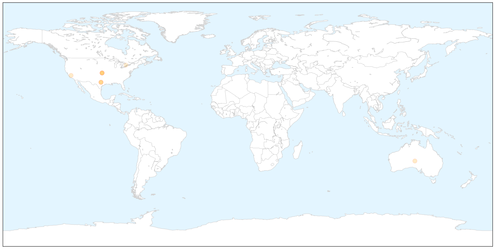
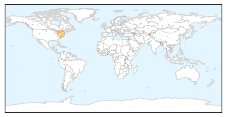

Measles
30-Day Web Trend
4 alerts, 3 warnings

30-Day Twitter Trend
0 alerts, 0 warnings

Article Locations

X

Article Confidences

Top Articles:
- 0.750
- Childhood vaccines debate rekindled at GOP presidential debate
- 0.747
- Childhood Vaccines Debate Rekindled at GOP Presidential Debate
- 0.737
- 5 myths surrounding vaccines -- and the reality
- 0.654
- What the News Isn�t Saying About Vaccine-Autism Studies
- 0.632
- Vaccine issue arises at GOP debate, to doctors' dismay
- 0.631
- Spacing Out Vaccines Isn’t Good for Kids
- 0.574
- Vaccines back in the headlines – here's what the experts say
- 0.513
- Sadly, there's no vaccine for stupidity
Top Tweets:
-
No tweets found for Sep 18, 2015
Mold/Fungal
30-Day Web Trend
30-Day Twitter Trend
0 alerts, 0 warnings

Article Locations

Article Confidences

Top Articles:
Top Tweets:
-
No tweets found for Sep 18, 2015